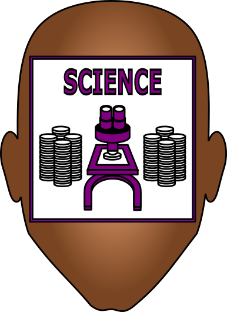

International BI Consultant
Mexico City and Colorado
(January 2012 – Present)
◘ Develop software algorithms for business automation and computational analysis.
◘ Consult multi-national executives in Latin America on international contracts and antitrust laws.
◘ Research and write industry legal briefs on international business and trade.
CEO's Executive Assistant
Violy & Company, New York City
(June 1997 - May 1998)
◘ Wrote business correspondence for mergers and acquisitions in Latin America
Commercial Director for Latin America
Cortado Inc., Latin America
(July 2007 – January 2012)
◘ Recruited and trained software distribution channels.
◘ Coordinated technology implementations for globally distributed systems.
◘ Established ThinPrint as the industry leader in Latin America by increasing sales over 400%.
Sales Trainer
Sprint, Colorado
(June 2005 - May 2007)
◘ Trained points of sale on emerging cellular technology.
Marketing Director
La Nueva Voz, Denver
(January 2003 – April 2005)
◘ Created editorial supplements for niche markets.
◘ Increased sales over 300%, doubling circulation and quadrupling page count.
◘ Produced and moderated live televised debates for Denver government.
Editor
Televisa, Miami and Mexico City
(July 1999 – November 2002)
◘ Produced online productions for alo.com. and wrote daily news articles in Spanish.
Publisher's Executive Assistant
La Opinion, Los Angeles
(June 1998 - June 1999)
◘ Wrote proposals for new business across all broadcast media.

Genetics Researcher
Boyer Center for Molecular Medicine at Yale
(September 1993 - May 1997)
◘ Sequenced the DNA mutations of Caenorhabditis elegans and their offspring after exposure to industrial chemicals.
Pathology Researcher
CU Center for Diabetes Research
(June 1991 - August 1993)
◘ Transplanted langerhan cells in mice in attempts to induce insulin production by organs other than the pancreas. Results were analyzed with Elispot assays.